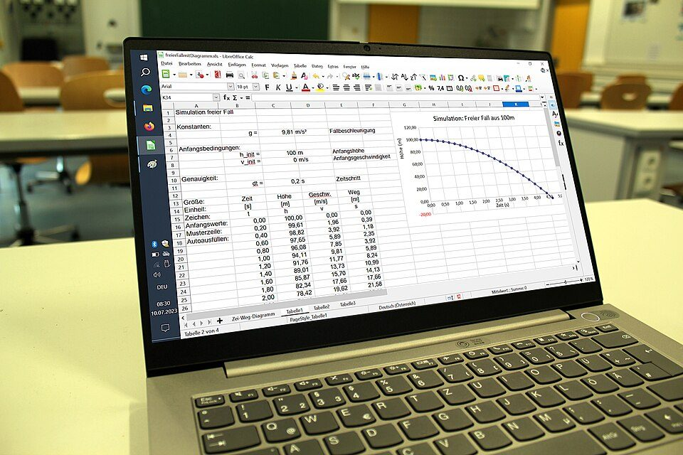
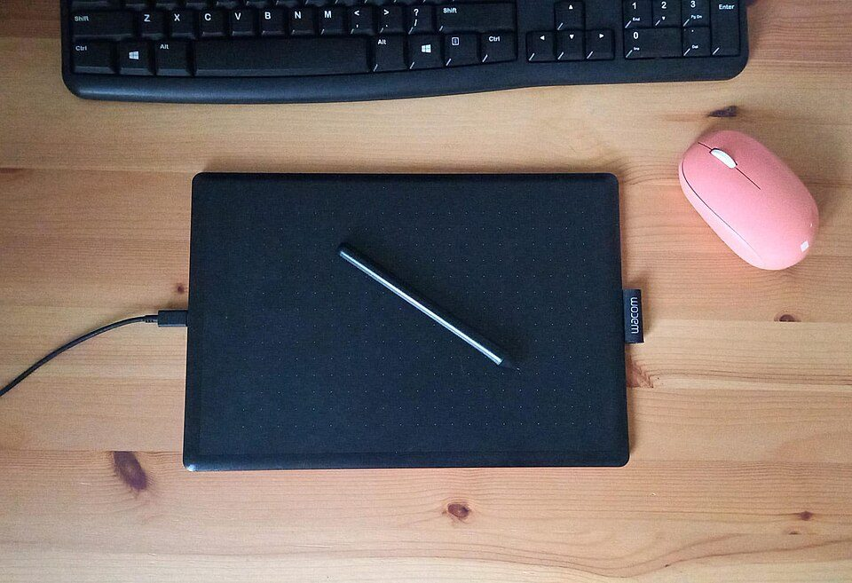
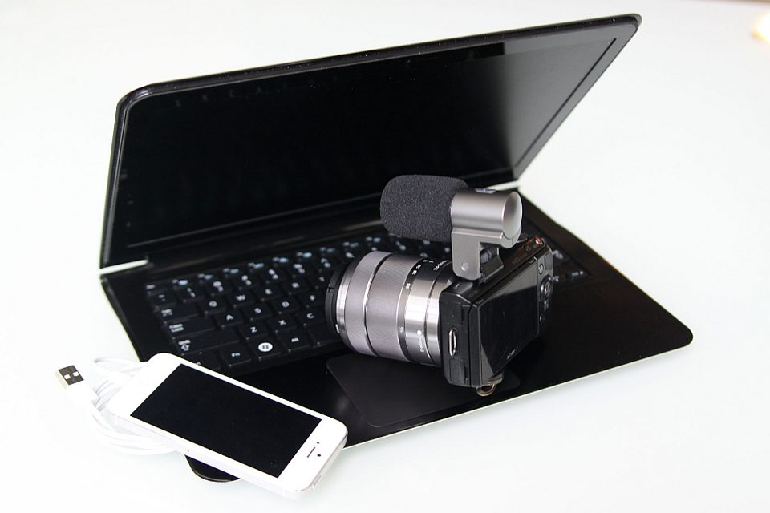
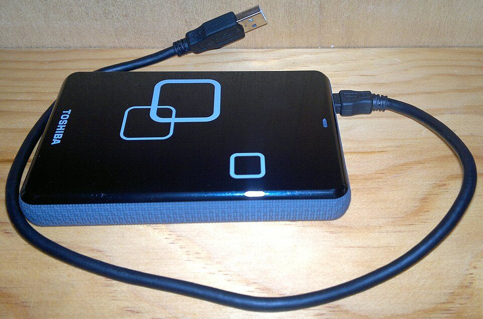

定番ソフトのまとめ：用途別の無料・有料の選び方、費用の比べ方、2025〜2026年の値上げと終了
要点まとめ
同じ「文書を作る」「PDFに書き込む」でも、OSに最初から入っている機能、無料のアプリ、有料のアプリと、選択肢はいくつもあります。この記事では、文書・PDF・画像・動画・セキュリティ・会議・保存の代表的なソフトを、「OS標準・無料・有料」の3段で整理しました。あわせて、買い切りとサブスク（定額の料金を払って使い続ける契約）の費用の比べ方、解約の注意、2025〜2026年の値上げ・終了・無料化をまとめています。
ここで挙げるのは、OSに標準で入っているもの、公的機関の説明に沿うもの、利用の多さを統計で確かめられるものなどで、優劣の順位ではありません。価格は、断りのないかぎり2026年11月18日に公式ページで確かめた通常価格で、期間限定の割引は除いています。LibreOffice・GIMP・7-Zip などのオープンソースのソフトは、オープンソースの便利なソフトの記事にまとめています。
まず「OS標準・無料・有料」の3段で考える
ソフトを選ぶときは、下の段から順に「これで足りるか」を確かめると、払わなくてよい費用を減らせます（筆者の提案）。セキュリティ対策については、総務省も、OSに標準装備されている対策ソフトを有効に活用するよう勧めています[1]。
| 用途 | OS の標準 | 無料 | 有料の例と価格 |
|---|---|---|---|
| 文書・表計算 | —（Windows のワードパッドは削除[10]） | Web 版 Microsoft 365[11]、Pages（Apple）[12]、LibreOffice（OSS） | Microsoft 365 Personal 年21,300円[4]、Office Home 2024 41,380円（買い切り）[2] |
| Edge（Windows）で書き込み[13]、プレビュー（Mac）で署名[14] | Acrobat Reader[15] | Acrobat（価格は今回確かめられず）[16] | |
| 画像 | ペイント・写真（Windows）[10]、プレビュー（Mac）[14] | Affinity（Canva の無料アカウントが必要）[17]、GIMP（OSS） | Creative Cloud Pro 月9,080円※[18]、Apple Creator Studio 月1,780円・年17,800円※[19] |
| 動画 | — | Clipchamp（1080pまで）[20]、iMovie[21]、DaVinci Resolve[22] | DaVinci Resolve Studio 40,980円[22]、Clipchamp の Premium（Microsoft 365 Personal・Family に含む）[20] |
| 圧縮・展開 | Windows 11 24H2 は ZIP・RAR・7z・TAR[23] | 7-Zip（OSS。暗号化した圧縮ファイル向け）[23] | — |
| ウイルス対策 | Windows セキュリティ（Microsoft Defender）[24] | — | 市販の対策ソフト（今回は比べていない）。Microsoft 365 Personal・Family に Defender アプリ[24] |
| ビデオ会議 | — | Teams 無料版（グループは60分・100人まで）[25] | Microsoft 365 Personal・Family で30時間・300人まで[25] |
| クラウド保存 | — | OneDrive 5GB[26]、iCloud 5GB[27]、Google 15GB[28] | iCloud+ 50GB 月180円[27]、Google One 100GB 月290円※[28]、Microsoft 365 Basic 100GB 年2,440円※[29] |
「—」は、今回の出典で確かめたものがない欄です。※は、公式ページに税込・税抜の記載がないもの（Apple Creator Studio・Google One・Microsoft 365 Basic）と、報道による2025年7月の発表時点の月額（Creative Cloud Pro）です。OSS はオープンソースのソフトで、別の記事で紹介しています。
Windows 11 は、7z や RAR も標準で扱える
バージョン24H2は、ZIP・RAR・7z・TAR に対応
Microsoft のサポートページによると、Windows 11 のバージョン24H2 は、ZIP に加えて RAR・7z・TAR の形式を扱えます。ただし、暗号化された圧縮ファイルの操作には対応しておらず、その場合は 7-Zip や WinRAR など Microsoft 以外のアプリを検討するよう案内しています[23]。
無料のソフトを入れるとき
入手先の確かめ方（公式サイトから入れる、一緒に入るものを確かめるなど）や、更新が止まったソフトの危険は、オープンソースのソフトの記事の「安全な入れ方」にまとめています。総務省は、更新の通知が表示されたら速やかに更新し、自動更新の機能があれば有効にするのもよい方法だとしています[30]。
文書・表計算：Microsoft 365、Office 2024、無料版
Word・Excel・PowerPoint を使う方法は、大きく分けて、サブスクの Microsoft 365、買い切りの Office 2024、無料の Web 版の3つです。値段だけでなく、何年・何人で使うか、保存容量も要るかで向き不向きが変わります。

Microsoft 365 Personal・Family（サブスク）
Personal 年21,300円、Family 年27,400円
- 費用
- Personal 年21,300円・月2,130円、Family 年27,400円・月2,740円（税込）[4][32][26]
- できること
- Word・Excel・PowerPoint などのデスクトップ版と Copilot。保存容量は Personal 1TB、Family は2TB を共有[26]
- 人数・台数
- Personal は1人で、5台で同時にサインインできる。Family は1〜6人で、AI は契約者本人だけ[26]
- 向く使い方
- Word などを毎年使い、保存容量や AI もほしい人（筆者の見解）
上位の Premium と、容量中心の Basic
Premium は年32,000円、Basic は年2,440円
Microsoft 365 Premium は年32,000円・月3,200円で、Family のすべての機能に、より大きな AI の利用枠などが加わります[26]。報道によると、Premium は2025年10月に始まり、同時に AI の上位版「Copilot Pro」（月3,200円）の販売は終わりました[34]。Microsoft 365 Basic は年2,440円・月260円で、100GB の保存容量と広告なしの Outlook が使えますが、AI 機能はありません[29]。
くわしく
- Premium と Basic の価格は、見たページに税込・税抜の記載がない
- 対象の学校のメールアドレスがある学生・教師は、Office 365 A1 を無料で使える[35]
Office Home 2024（買い切り）
41,380円（税込）。サポートは2029年10月まで
- 費用
- 41,380円（税込）の1回払い[2]
- できること
- Word・Excel・PowerPoint・OneNote の永続版。ライセンスの欄は「2 台の Windows PC または Mac」で、商用利用もできる[2]
- サポート
- 2029年10月に終了[3]
- 向く使い方
- Word・Excel を数年使い、保存容量や AI は要らない人（筆者の見解）
終了 Office 2016・2019 のサポート
延長サポートは2025年10月に終わった
Microsoft のライフサイクルのページでは、Office 2016 と Office 2019 の延長サポートは2025年10月に終わっています[37][38]。総務省は、Office 2016 の延長サポートが2025年10月14日に終わると紹介し、サポート期間が切れたソフトは、脆弱性（セキュリティの弱点）が見つかっても修正されないと注意しています[30]。
無料で使うなら、Web 版や Pages
Web 版の Word・Excel・PowerPoint は無料
Microsoft は、Web 版の Microsoft 365 で Word・Excel・PowerPoint に無料でアクセスできるとしています[11]。Apple の Pages は App Store で「無料」と表示され、書類の作成・編集やほかの人との共同作業に、サブスクの登録は要らないと説明されています[12]。
くわしく
- Pages は Apple Creator Studio の一部にもなり、登録でプレミアムコンテンツが使える[12]
- オープンソースの LibreOffice は、オープンソースのソフトの記事で紹介している
PDF・画像・動画
PDF：読む・書き込む・署名は、標準と無料で
Edge・プレビュー・Acrobat Reader で書き込みや署名
Windows では、Microsoft Edge を既定の PDF リーダーにすると、ハイライトやテキストの追加をして保存できます[13]。Mac の「プレビュー」は、PDF のフォームへの入力・署名や注釈に対応しています[14]。アドビの Acrobat Reader は無料で、PDF の表示・コメント、フォームへの入力、署名ができます[15]。

Adobe Creative Cloud は「Pro」と「Standard」に
コンプリートプランが Creative Cloud Pro に変わった
コンプリートプラン → Creative Cloud Pro の月額（2025年7月の発表時点の報道）
変更前：7,780円変更後：9,080円
報道によると、アドビは2025年7月2日に、「コンプリートプラン」を「Creative Cloud Pro」に改め（Photoshop など20種類以上のデスクトップアプリを含む）、機能を絞った「Creative Cloud Standard」（月6,480円、生成 AI は月25クレジットまで）を設けると発表しました[18]。
くわしく
- 学生・教職員向けの Pro は、初年度が月3,280円、更新後は月4,180円（報道）[18]
- 報道には、価格が税込かどうかの記載がない
- いまの公式の価格と、Photoshop などの単体プランの価格は確かめられなかった
無料化 画像・デザインの Affinity が無料に
写真・ベクター・レイアウトを1つにしたアプリ
Canva は、写真編集・ベクターデザイン・ページレイアウトの道具を1つにまとめた新しい Affinity を、すべての人に無料で提供すると発表しました[17]。発表の時点で Mac と Windows で使え、iPad 版は「近日」としていました。新しく使う人は、Canva の無料アカウントを作って入手します[17]。
- 費用
- 無料。アプリの中の Canva の AI 機能は、Canva の有料アカウントが必要[17]
- 向く使い方
- 写真の加工やチラシ作りを、サブスクなしで始めたい人（筆者の見解）
Apple Creator Studio（サブスク）
月1,780円か年17,800円。新規は1か月無料
Apple Creator Studio は、動画編集の Final Cut Pro、画像編集の Pixelmator Pro、音楽制作の Logic Pro などと、Keynote・Pages・Numbers のプレミアムコンテンツをまとめたサブスクです[19][12]。新規登録は1か月無料で、その後は月1,780円か年17,800円で自動的に更新されます。ファミリー共有で最大5人と共有できます[19]。公式ページには、税込・税抜の記載は見当たりませんでした。

動画：無料版で始め、足りなければ有料版に
iMovie は無料。Clipchamp・Resolve にも無料版
Microsoft の Clipchamp は、無料プランで1080p（フルHD）までの動画を透かしなしで書き出せます。4K の書き出しなどの Premium 機能は、Microsoft 365 Personal・Family に含まれます[20]。Apple の iMovie は無料です[21]。Blackmagic Design の DaVinci Resolve は、無償版でも Ultra HD（3840×2160）・60fps までの編集・仕上げができます[22]。
- 有料の例
- DaVinci Resolve Studio は、オンラインで40,980円（税込）。32K・120fps まで対応[22]
- 向く使い方
- まず無料版で試し、解像度や機能が足りないと分かってから有料版を考える（筆者の提案）
セキュリティ：OS標準を有効にし、偽の警告に注意
総務省の考え方：まず OS 標準を有効に
市販ソフトは「検討してみるのもよい」という位置づけ
総務省の「国民のためのサイバーセキュリティサイト」は、いまのほとんどのコンピュータには、OS や Web ブラウザの機能として対策ソフトが標準装備されているので、それを有効に活用するよう勧めています[1]。もっと機能が必要と感じるなら、市販の対策ソフトの購入を「検討してみるのもよいかもしれません」としたうえで、有償のソフトは有効期限が過ぎると更新されなくなるため、料金を払い続ける必要があると説明しています[1]。
期限切れ・体験版のまま使わない
総務省によると、OS によっては、市販の対策ソフトを入れると OS 標準の対策ソフトが止まるものがあり、その場合に期限切れのまま使い続けるのは「かえって危険」です。体験版が入った状態で売られているパソコンは、払う予定がなければ早めにアンインストールし、OS 標準の対策ソフトが働くように戻しておくよう勧めています[1]。
Windows セキュリティ（Microsoft Defender）
Windows に組み込まれ、起動した時から保護する
Microsoft によると、Windows セキュリティは Windows に組み込まれたアプリで、Microsoft Defender ウイルス対策、Windows ファイアウォール、スマート アプリ コントロールなどの機能を含みます[24]。Microsoft 365 Personal・Family の契約者は、Windows・Mac・iOS・Android 用の Microsoft Defender（アプリ）も使えます[24]。
注意 偽のセキュリティ警告に電話しない
「ウイルスに感染」の画面の番号にかけない
IPA（情報処理推進機構）は、偽のセキュリティ警告に表示された番号に電話をかけないよう呼びかけています。相談では、画面を閉じられずに電話をかけて被害にあう人が多いとしています[41]。警察庁によると、偽の警告で電話をかけさせ、サポートの名目でお金をだまし取ったり、遠隔操作ソフトを入れさせたりする手口があります[42]。
ブラウザ・会議・保存とバックアップ
ブラウザ：パソコンは Chrome と Edge が多い（参考）
日本のパソコンでは Chrome 54.14%、Edge 28.47%
民間の統計サイト StatCounter の2026年10月の値では、日本のパソコンのブラウザは Chrome が54.14%、Edge が28.47%でした。スマホでは Chrome が54.85%、Safari が40.43%です（いずれも参考）[43][44]。Windows の Internet Explorer 11 は廃止され、Microsoft Edge に切り替えられています[10]。総務省は、OS だけでなく Web ブラウザにも、対策の機能が標準装備されているとしています[1]。
終了 Skype は2025年5月に終了
移行先は Teams 無料版。データ削除は2026年4月から
Microsoft によると、Skype は2025年5月5日で提供を終えました。Skype のアカウントで Teams 無料版にサインインすると、連絡先とチャットが自動で移ります[45]。データの削除は2026年4月1日に始まると案内され、Skype 番号のサブスクリプションも2026年5月に終わりました[45]。
Teams 無料版の制限
グループ会議は60分・100人まで
Teams 無料版は、グループ通話・会議が最長60分、1つの会議の参加者は100人まで、1対1の通話は最長30時間、クラウドの保存容量は1人5GB です[25]。Microsoft 365 Personal・Family の契約者は、グループ会議が最長30時間・300人までになります[25]。

無料の保存容量は 5GB〜15GB
OneDrive 5GB、iCloud 5GB、Google 15GB
Microsoft アカウントでは、OneDrive を5GB まで無料で使えます[26]。Apple の iCloud は、情報を自動的にバックアップし、5GB までは無料です[27]。Google アカウントには最大15GB の保存容量があり、有料の Google One のプランの容量はこれを含みます[28]。
値上げ iCloud+ は2026年7月に値上げ
50GB は月150円から180円に（報道）
報道によると、アップルは2026年7月18日に、iCloud+ などの月額料金を改定しました[7]。Apple の公式ページは、日本の料金はすべて税込みとしています[27]。
有料の容量と、バックアップの機能
100GB なら Google One は月290円
Google One の100GB のプランは、公式ページの表示で月290円です（税込・税抜の記載はなし）[28]。Microsoft の OneDrive は、Microsoft 365 Basic（100GB、年2,440円）、Personal（1TB）、Family（2TB）と容量が増えます[46]。OneDrive の比較表では、これらのプランに「Windows バックアップ」「バージョン履歴」「ランサムウェアの検出とファイルの復元」が含まれています[46]。
クラウドとは別の場所にも写しを（筆者の提案）
大切な写真や書類は、クラウドのほかに、外付けのディスクなど別の場所にも写しを置いておくと、アカウントのトラブルや機器の故障に備えやすくなります。
費用の比べ方と、サブスクの解約の注意
買い切りとサブスクは、何年使うかで総額が変わります。いまの通常価格のまま、Word・Excel を5年使う場合を計算しました（値上げは考えていません）。
見方: Personal を年払いで2年使うと42,600円で、Office Home 2024 の41,380円を上回ります。月払い（月2,130円）なら5年で127,800円です[26]。ただし Office Home 2024 のサポートは2029年10月までなので、いま買うと更新を受けられるのは約3年です[3]。そのあとも使うなら、次の版を通常価格で買う必要があります[2]。Personal には1TB の保存容量や Defender のアプリなども含まれるので、総額だけでなく中身も比べるのが大切です（筆者の見解）。
比べるときに確かめたい4つのこと
年数・人数・容量・サポート期限（筆者の提案）
見方: 消費者庁の検討会の資料によると、全国の消費生活相談の情報を集めた PIO-NET に登録された相談のうち、「サブスクリプション」という言葉を含むものは、2021年度の7,461件から2025年度は20,174件と、約2.7倍に増えました[5]。
国民生活センターの注意をもとに、申し込みから解約までに気をつけることを並べました。
- 申し込む前
利用規約で、お試しの条件とサブスクへの移行を確かめる
お試しのつもりでも、期間内に解約しないとサブスクに移る契約がある[47]
- お試し中
続けないなら、期間内に解約する
無料のお試しは、終わると自動で定額サービスに移ることが多い[6]
- 毎月
クレジットカードやキャリア決済の明細を確かめる
使っていないサブスクの請求に気づけるように[6]
- やめるとき
事業者が決めた方法で解約する
アプリのアイコンを消したり、アンインストールしたりするだけでは解約にならない[6]
アプリを消しても、引き落としは続く
相談例では、毎月約2,000円が半年以上
国民生活センターの相談例では、1か月無料の動画配信サービスに登録し、数週間後にアプリを削除したのに、キャリア決済で毎月約2,000円が半年以上引き落とされていました[6]。SNS の広告を見て3日間で約200円のお試しを申し込んだつもりが、約200円に加えてサブスクの代金として約6,000円も引き落とされ、海外のサイトで解約の方法も分からなかった例もあります[47]。
国も、解約の妨害を禁じるルールを検討中（案の段階）
消費者庁の検討会は、2026年8月31日の第8回で「中間取りまとめ（案）」を議題にしました[48]。資料は、いまの消費者契約法には、契約を続ける・終えるときの課題に対処できる適切な規律がないとして、「解約妨害の禁止」、解約の方法・条件を知らせる事業者の努力義務、契約の更新時・変更時の規定などを論点に挙げています[5]。まだ案の段階で、法改正の時期は今回確かめられませんでした。
2025〜2026年の値上げ・終了・無料化
この記事で取り上げた変化を、時期の順に並べました。画像・デザインの Affinity の無料化（3章）は、Canva の発表ページに日付の表示がなかったため、ここには入れていません。
- 2025年1月
Microsoft 365 Personal・Family に Copilot。月640円の値上げ
- 2025年5月5日
Skype が終了。Teams 無料版へ
- 2025年8月1日
Adobe のコンプリートプランが Creative Cloud Pro に（北米以外）
料金が変わるのは次回の契約更新日以降[39]
- 2025年10月2日
Microsoft 365 Premium が始まり、Copilot Pro の販売を終了
報道の日付[34]
- 2025年10月
Office 2016・2019 と Windows 10 のサポートが終了
Windows 10 は、オープンソースのソフトの記事でも触れている[37][38][49]
- 2026年1〜5月
Office Home 2024 が34,480円から41,380円に
- 2026年4〜5月
Skype のデータ削除が始まり、Skype 番号も終了
データ削除は4月1日から[45]
- 2026年7月18日
iCloud+ が値上げ（50GB は月150円→180円）
報道による日付[7]
- 2026年8月31日
消費者庁の検討会が「中間取りまとめ（案）」を議題に
- 2029年10月
Office 2024 のサポート終了（予定）
今回確認できなかった点
- Acrobat、Photoshop・Premiere の単体プラン、Canva の有料版、Zoom の価格と、Zoom の無料版の制限（価格が後から読み込まれるページで、保存した原文で確かめられなかった）
- Adobe Creative Cloud のいまの公式の価格（2025年7月の発表時点の報道の値だけ）
- Office Home 2024 の値上げの告知と、正確な日付
- Microsoft 365 の Classic プランの日本での価格と、切り替えられる期限
- Microsoft 365 Basic・Premium、Google One、Apple Creator Studio の価格が税込かどうか
- Affinity の無料化の発表日と、Apple Creator Studio の提供開始日
- 市販のセキュリティソフトの要否を、総務省以外の公的機関が一般向けに明言した資料
出典（49件）
閲覧日はいずれも2026年11月18日
- セキュリティ対策ソフトを活用しよう（国民のためのサイバーセキュリティサイト）（総務省）
- Office Home 2024（Microsoft Store）
- Office 2024 - Microsoft Lifecycle（Microsoft Learn）
- Microsoft 365 Personal (旧 Office 365) を購入（Microsoft Store）
- 現代社会における消費者取引の在り方を踏まえた消費者契約法検討会 第8回 説明資料－中間取りまとめ（案）－（PDF）（消費者庁）
- 見守り新鮮情報 第545号「サブスクリプション アプリの削除だけでは解約になりません！」（2026年7月9日）（国民生活センター）
- Apple MusicやApple TV、AirPodsシリーズなど値上げ（2026年7月21日）（AV Watch）
- Office Home 2024（保存版、2026年1月5日時点）（Microsoft Store（Internet Archive の保存版））
- Office Home 2024（保存版、2026年5月28日時点）（Microsoft Store（Internet Archive の保存版））
- Windows クライアントで削除された機能（Microsoft Learn）
- 無料の Microsoft 365 Online | Word、Excel、PowerPoint（Microsoft）
- Pages（Apple（App Store））
- 内蔵PDFリーダーと翻訳機能 | Microsoft Edge（Microsoft）
- Macの「プレビュー」で画像に注釈を付ける（プレビュー ユーザガイド）（Apple サポート）
- 無料PDFリーダー | Adobe Acrobat Reader 公式（アドビ）
- Adobe Acrobatのプランと価格（アドビ）
- Introducing the all-new Affinity: Professional design, now free for everyone（Canva）
- Adobe Creative Cloudのプランが二分化 生成AI機能を大幅拡充（2025年7月3日）（デジカメ Watch）
- Apple Creator Studio（Apple）
- Clipchamp の無料プランとプレミアム サブスクリプション プランを比較する（Microsoft（Clipchamp））
- iMovie（Apple）
- DaVinci Resolve – Studio（Blackmagic Design）
- ファイルを圧縮および展開する（Microsoft サポート）
- Windows セキュリティ アプリで常に保護する（Microsoft サポート）
- 無料の Microsoft Teams（Microsoft）
- Microsoft 365 プランの比較（個人向け）（Microsoft）
- iCloud+のプランと料金（Apple サポート）
- クラウド ストレージのアップグレードのプランと料金 - Google One（Google）
- Microsoft 365 Basic（Microsoft）
- 国民のためのサイバーセキュリティサイト「一般利用者向けの対策」（PDF）（総務省）
- Microsoft 365 Personal/Familyが「Copilot」に対応 月額640円値上げ（2025年1月17日）（Impress Watch）
- Microsoft 365 Family (旧 Office 365) を購入（Microsoft Store）
- Microsoft 365 Personal および Family に Copilot が追加されました（2025年1月17日）（日本マイクロソフト（Windows Blog for Japan））
- Copilot Pro全機能搭載の「Microsoft 365 Premium」 月3200円（2025年10月2日）（Impress Watch）
- 学校向けの無料の Microsoft Office 365（Microsoft Education）
- Office Home & Business 2024（Microsoft Store）
- Microsoft Office 2016 - Microsoft Lifecycle（Microsoft Learn）
- Microsoft Office 2019 - Microsoft Lifecycle（Microsoft Learn）
- Creative Cloud - プランと価格の変更（アドビ（Adobe コミュニティの「アドビからのお知らせ」））
- Test antivirus software for Windows 11 - August 2026（AV-TEST）
- 偽セキュリティ警告（サポート詐欺）対策特集ページ（IPA（情報処理推進機構））
- サポート詐欺対策（警察庁）
- Desktop Browser Market Share in Japan（StatCounter（民間の統計））
- Mobile Browser Market Share in Japan（StatCounter（民間の統計））
- Skype は 2025 年 5 月に廃止されます: 知っておくべきこと（Microsoft サポート）
- クラウド ストレージのプランと価格 | Microsoft OneDrive（Microsoft）
- 海外事業者とのサブスク契約だったなんて！－申込前に契約内容の確認を－（2025年4月22日）（国民生活センター）
- 第8回 現代社会における消費者取引の在り方を踏まえた消費者契約法検討会（2026年8月31日）（消費者庁）
- Windows 10 Home and Pro - Microsoft Lifecycle（Microsoft Learn）
写真・画像の出典（5件）
- 机に置いたノートパソコンと卓上ライト、積んだ本
写真: freddie marriage／Wikimedia Commons（CC0） - 表計算ソフトで作った表とグラフを表示したノートパソコン
写真: MikeRun／Wikimedia Commons（CC BY-SA 4.0） - ペンタブレットとキーボードとマウス（絵や写真の編集に使う入力機器）
写真: Spnq／Wikimedia Commons（CC0） - 動画の撮影と編集に使う道具（ノートパソコン、カメラ、スマートフォン）
写真: Intel Free Press／Wikimedia Commons（CC BY-SA 2.0） - USB でつなぐ外付けのハードディスク（1TB）
写真: Editor182／Wikimedia Commons（パブリックドメイン）